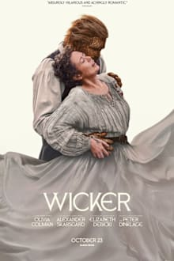
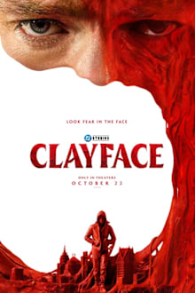
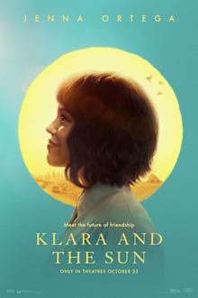

Theaters · Raleigh area · Fri Oct 23 + Sat Oct 24, 2026
Wildwood Saturday. One movie for both of you.
BLUF: See Wildwood, Saturday 7:00 at AMC Dine-In Holly Springs (Laser at AMC). Laika's new stop-motion epic has the best reviews of anything playing: 100% RT on 62 reviews, 98% audience, Metacritic 86. It's handmade and auteur-driven for you, and a warm fairy-tale rescue story for Bekah. It isn't at Alamo or Fenton. If you want an Alamo night, the backup is Wicker, Saturday 7:30 at Alamo, but it's already showing few seats left, so buy tonight.
The picks

Wildwood THE PICK
2h12m · PG-13 · Travis Knight (Kubo and the Two Strings) · Laika
Crows carry off a girl's baby brother into the forbidden forest outside Portland, and she bikes in after him.
RT 100% / 98% audience · Metacritic 86 · Atom 4.3/5
From the Coraline studio, adapted from Colin Meloy's novel (Meloy fronts the Decemberists). Sixteen years in development, Laika's biggest film, and critics are calling it their best. The Film Stage compares its darkness to Miyazaki and the Brothers Grimm, not Disney. It's the closest thing to Wes Anderson's handmade worlds on any screen right now (he made Fantastic Mr. Fox in stop-motion), and an original fairy tale, not a franchise. Bekah: high odds. A sister saving her brother, talking animals, a 98% audience score. One warning: it opens grim and it's long. Not a cold character study, though.

Wicker ALAMO BACKUP
1h45m · R · Alex Huston Fischer and Eleanor Wilson · Olivia Colman, Alexander Skarsgård, Peter Dinklage
A village outcast pays the basketmaker to weave her a husband, and he comes to life.
RT 95% / Atom 3.7/5 audience · Metacritic 68
Deadpan medieval fable, got a standing ovation at Sundance. Oddball and romantic, real Wes-adjacent tone. Critics like it more than they love it: TheWrap called it "well-intentioned but wooden," and it reportedly loses steam late. Lots of bed-breaking sex played for laughs. Pick this only if Alamo's food and drinks matter more than the movie. Bekah: decent odds. It's a love story with a sense of humor.
Wildwood
| Theater | Fri 10/23 | Sat 10/24 |
|---|
| AMC Dine-In Holly Springs (Laser at AMC) | 7:00 · 10:15 | 7:00 · 10:15 |
| Regal North Hills, Raleigh | 6:30 · 9:45 | 6:30 · 9:45 |
| Regal White Oak, Garner | 6:40 · 10:05 | 6:40 · 10:05 |
| Regal Crossroads, Cary | 7:25 · 10:45 | 7:25 · 10:45 |
| Alamo Raleigh, Paragon Fenton | not playing | not playing |
Wicker
| Theater | Fri 10/23 | Sat 10/24 |
|---|
| Alamo Drafthouse Raleigh | 7:30 · 9:30 | 7:30 (few seats left) · 9:30 |
| AMC Dine-In Holly Springs (Laser at AMC) | 7:30 · 10:15 | 7:30 · 10:15 |
| Regal North Hills, Raleigh | 6:15 · 8:55 | 6:15 · 8:55 |
| Regal White Oak, Garner | 6:50 · 10:05 | 6:50 · 10:05 |
| Paragon Fenton, Regal Crossroads | not playing | not playing |
Evening shows. Pulled Thursday from Atom Tickets and Fandango. Fenton has neither film; its Axis15 is running Clayface. If you end up at a Regal, the military discount is box office only with ID.
Skip

Clayface SKIP
1h48m · R · James Watkins (Speak No Evil) · script by Mike Flanagan
A disfigured movie star signs up for an experimental fix and turns into living clay. DC body horror.
RT 76% · Atom 3.7/5
Superhero, so the bar is high, and it doesn't clear it. RT's own roundup: "messy but distinctive." Fails the franchise test. Skip.

Klara and the Sun SKIP
1h57m · PG-13 · Taika Waititi · Jenna Ortega, Amy Adams
A robot companion is bought to look after a sick girl. Kazuo Ishiguro adaptation.
RT 27% · Atom 3.2/5
Waititi's worst-reviewed film. Critics used "awful" and "wretched." Skip.
Already seen: Primetime, Resident Evil, Toy Story 5. Already planned: You Can See Everything. Still playing: Your Mother Your Mother Your Mother (last week's pick, 96% / 93%) is at Alamo Sat 7:15 if you missed it. Fjord (Mungiu, Metacritic 81, 2h26m) is at Alamo, but it's heavy and cold, so a Benny-solo night. Also cut: Love Language (75%), Street Fighter (41%), Whalefall (72%), Sense and Sensibility (78%), DreamQuil (41%), Verity, Other Mommy. Re-releases: Marie Antoinette at Alamo, The Devils.
Next 2-3 weeks
- The Only Living Pickpocket in New York (Noah Segan, Rian Johnson's regular). John Turturro as an aging pickpocket. 88 minutes, RT 98%. Wide Oct 30. Both of you: bittersweet but warm.
- Wild Horse Nine (Martin McDonagh). Malkovich and Rockwell in a CIA black comedy. RT 94%, Metacritic 79. Nov 6. Benny for sure, Bekah probably.
- Club Kid (A24, Jordan Firstman's debut). A washed-up party promoter suddenly has to raise the 10-year-old son he never knew about. RT 100%, Metacritic 84. Nov 6, limited. Benny, maybe both.
- The Cat in the Hat (Warner Bros. Animation, Bill Hader). Bekah's nostalgia lane. No reviews yet, needs to clear the bar. Nov 6.
- Ebenezer (Ti West, Johnny Depp as Scrooge). Gothic A Christmas Carol from the X and Pearl director. Test screenings scored high. Nov 13. Both: horror auteur meets a story she grew up with.
- Paper Tiger (James Gray, Adam Driver, Scarlett Johansson). Nov 13. Benny.
Sources: The Numbers, Rotten Tomatoes, Metacritic via Wikipedia, Atom Tickets, Fandango, Box Office Theory, The Film Stage, TheWrap, Gold Derby. Final version, Oct 22, 2026.